Thank you for having chosen PHLY!
You've chosen the right one, almost 1 month has been necessary to build this template for having a perfect layout on every screen, an advanced design and the last trends coupled with an accurate coding.
Free update with new variants are available regularly.
I would be very grateful if you could rate my item at this link with 5 stars and leave your feedback, this is very important for me, Thanks! :-)
If you have any questions, feel free to email me via my user page with the contact form Here
I try to answer as soon as possible, 7/7 and almost 24/24!
Time in my country :
During your customization, I advise you to be connected to Internet for the correct running of jQuery
All the lines of style written in this document are the lines of the CSS files. The line numbers for the SASS users are almost the same, thanks for your comprehension.
How To Install PHLY Via FTP :
Step 1 - Log into your hosting space via an FTP software (Filezilla for example).
Step 2 - Unzip your Download Pack file and open the extracted PHLY template folder.
Step 3 - Upload the HTML file corresponding to the variant of your choice along with all directories (css,js,php,img) in the structure that they appear in your download package. Then, the HTML file should reside in the root directory, and all other files should reside inside their associated folder.
This is an Easy to use animated countdown javascript.
You just have to set up your end date in the script part of your HTML, see the screenshot below.
<script> $("#getting-started") // Year/Month/Day Hour:Minute:Second .countdown("2019/10/24 15:30:30", function(event) { $(this).text( event.strftime('%D Days %Hh %Mm %Ss') ); }); </script>
Using a very simple sass function, and CSS animation keyframes, built parallax scrolling stars in space. The sass function creates a random star field on each load.
Change the color, speed and number of stars you need directly in your main CSS/SCSS file.
SASS users, settings in _mixins.scss & style.scss / style-map-variant.scss see the screenshots below.

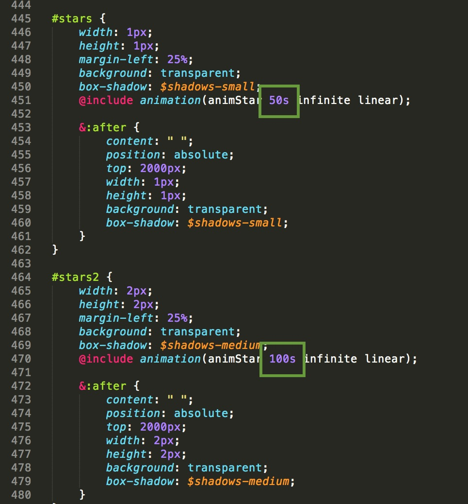
CSS users, settings in style.css / style-map-variant.css see the screenshot below.
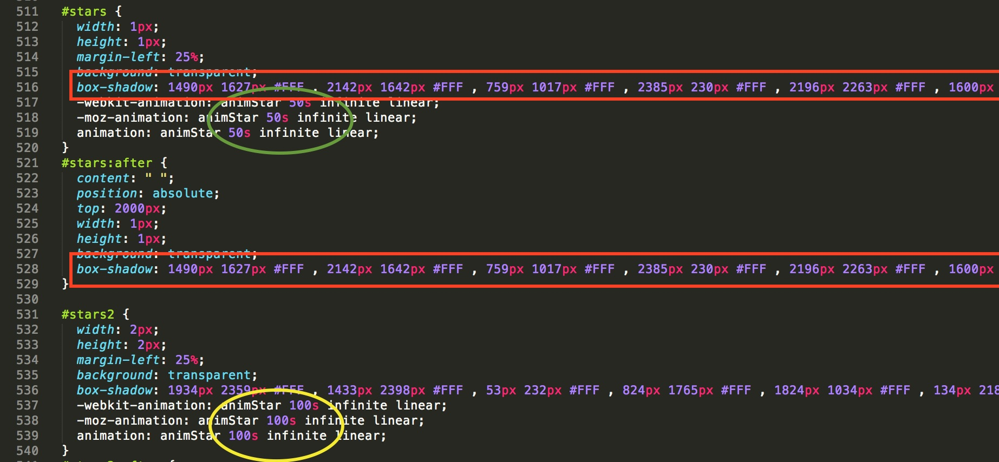
For the removing of the effect, remove the lines on the screenshot below.
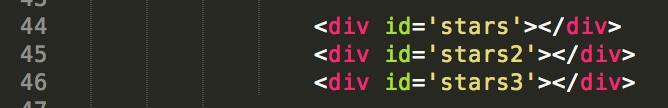
VEGAS is a jQuery plugin which adds beautiful animated background slideshows to your page body or any of its elements. It works on IE9+, Safari, Firefox and Chrome.
Check the awesome official documentation of this plugin here for all the settings available.
Specific slide options and settings are in the file js/vegas.js, see the screenshot below.
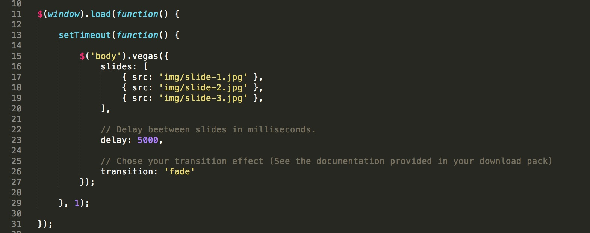
PS : For the Ken Burns variant, the settings are in the file js/kenburns-vegas.js
4 clouds are integrated in the variant, 4 png files provided in your download pack.
Change the speed of clouds directly in your main CSS/SCSS file, see the screenshot below.
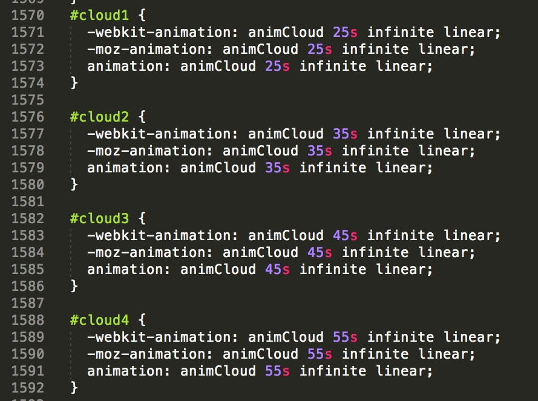
This powerful plugin of Animated Background Gradient is really easy to edit.
Specific color options and settings are in the file js/gradient.js, see the screenshot below.
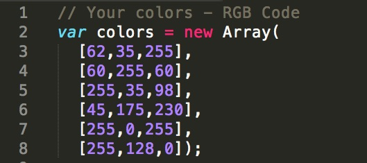
This powerful plugin of Constellation effect is really easy to edit.
Specific color options and settings are in the file js/constellation.js, see the screenshot below.
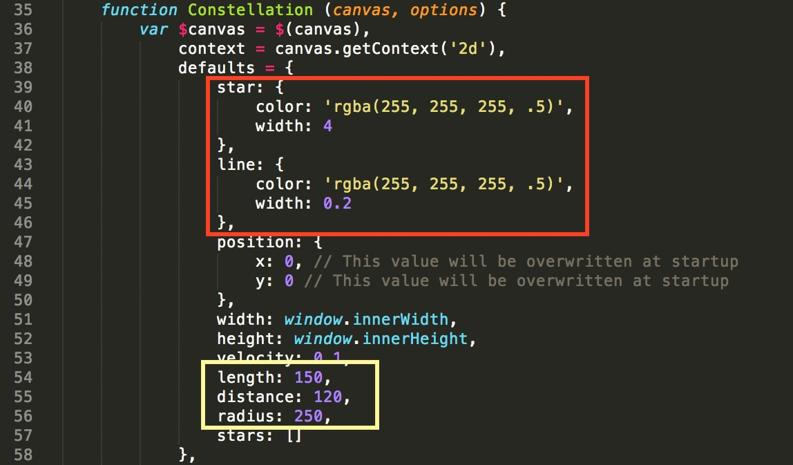
This powerful plugin called Flat Surface Shader is really easy to edit.
Specific color options are in the html file, see the screenshot below.
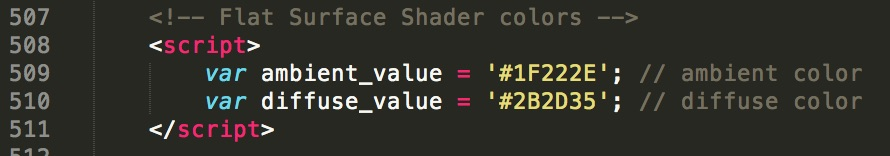
With this awesome plugin, your page will be very attractive.
You can edit the colors and the shape of the squares in the back.
Specific color options and settings are in the file js/dotty.js, see the screenshot below.
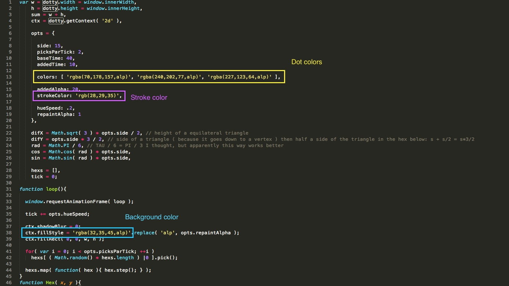
This variant uses WebGL experiments. The idea is to create a very realistic looking rain effect.
More information here : http://tympanus.net/codrops/2015/11/04/rain-water-effect-experiments/
To get your effect, you just have to replace 2 pictures by yours.
Please note also, you’ll need to put your files on Localhost or immediately online. Indeed, the rain effect will not work locally.
As said previously, in the folder img/weather, you will find 2 pictures.
I advise you to use the next resolutions :
texture-rain-bg.png : 960×640
texture-rain-fg.png : 240x160
Simple tip, I started with a default picture with the size 1920x1280.
texture-rain-bg = 1920x1280 / 2
texture-rain-fg = 1920x1280 / 8
Please note that the effect is highly experimental and might not work as expected in all browsers. Best viewed in Chrome.
Create a deep "Star Wars" environment for your page
You can edit the colors of the background and the stars.
Specific color options and settings are in the file js/starfield.js, see the screenshot below.
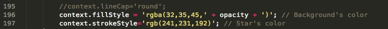
Create a funny bubble animation for your page
You can edit the bubble's color and the background.
Specific bubble'scolor options are in the file js/bubble.js, see the screenshot below.
All the colors available here : http://www.w3schools.com/tags/ref_colornames.asp
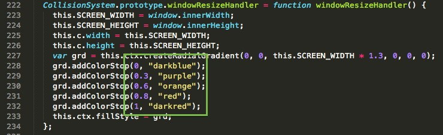
Background settings are in the main css file, css/style.css, see the screenshot below.
You can chose a colored background or the default pattern, or even an other picture of your choice found on Internet.
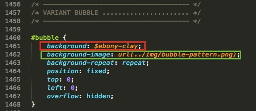
Create an experimental fireworks animation for your page
You can edit the fireworks and the background.
Specific firework's options are in the file js/fireworks.js, see the screenshot below.
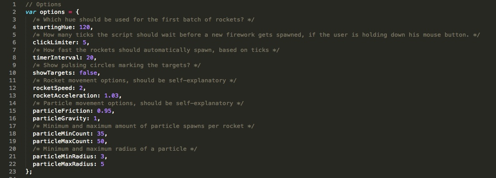
Background settings are in js/vegas-fireworks.js, see the screenshot below and also the slideshow informations in this documentation.
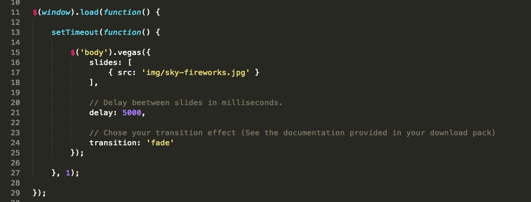
Waterpipe animation is a jQuery plugin for smoky backgrounds developed by dragdropsite.com
A lot of options are available, I invite you to check the official documentation Here
Specific color options and settings are in the file js/waterpipe.js, see the screenshot below.
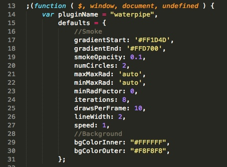
Please note that basically, the text version is associated to the waterpipe.js and the countdown one with waterpipe-2.js. Only the colors settings are different.
The plugin Particles.js is used for this animation, a lightweight JavaScript library for creating particles.
A lot of options are available, I invite you to check the official documentation Here
Specific color options and settings are in the file js/particles.js, see the screenshot below.
Background color is only the color of your body set up in style-minimal-flat.css
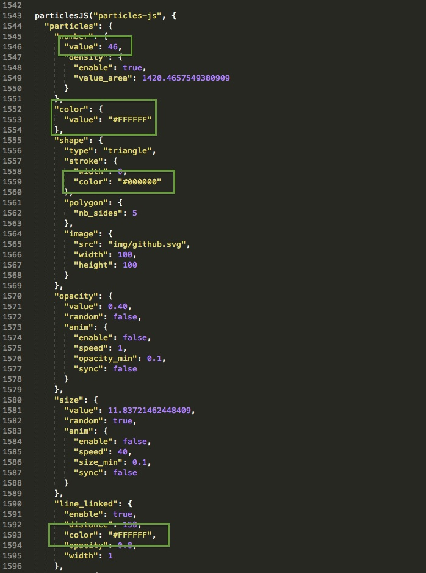
For the background picture, there is already the placeholder in your img folder called slide-square.jpg. Settings if you want to display a slideshow instead of a simple picture are in vegas-square.js. See the slideshow informations in this documentation
Specific color options and settings are in the file js/square.js. Sense from left to the right is in the main css file with a rotate trick.
Don't hesitate to contact me for more informations ;-)
The plugin gravity.js is used for this animation, a lightweight JavaScript plugin for creating gravity effect on points.
Some options are available, I invite you to check the official pen Here
Specific color options and settings are in the file js/gravity.js, see the screenshot below.
Background color is editable in this file.
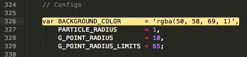
Shooting stars is an experiment with creating particle rendering systems with the HTML5 Canvas.
Some options are available, I invite you to check the official Github Page Here
Specific color options and settings are in the file js/stars.js, see the screenshot below.
Background color is editable in the main CSS file (style.css).
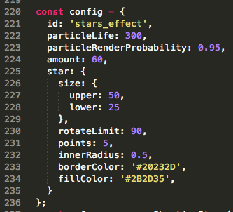
HTML5 jQuery Video Background plugin created by BlakeWilson. Official plugin page here.
Compatible with all modern web browsers (IE9+), video will play on desktops and laptops and will resort to the fallback image (poster) on mobile devices (tablets, phones, etc.).
Instructions
1. Add your video in the folder called "media".
2. Rename this one as "your-video(.mp4)". Of course, you can use an other file name but by default, this is the one used.
3. Add your picture used on mobile devices in the same folder, under the name "device-background(.jpg)".
How looks the Initialisation?
Check out the bottom of your HTML file (only for the index-local-video(-countdown).html) and you will find this part :
$(function($){ $('body').vidbg({ 'mp4': 'media/your-video.mp4', // Link to your video 'poster': 'media/device-background.jpg', // Picture displayed on mobile }, { // Options muted: false, loop: true, overlay: true, overlayColor: '#000', overlayAlpha: '0.3', }); });
Stunning bubble animation with different colors.
Specific color options and settings are in the file js/bubble.js, see the code below.
Back bubbles line 27
this.aBgBubbles.push(new Bubble('#00bbec', 3.5)); // Color for the bubbles in the back
Front bubbles line 86
var _c = arguments.length <= 0 || arguments[0] === undefined ? '#ffffff' : arguments[0]; // Color for the bubbles on the front
Background color is only the CSS background used on the body tag.
Awesome plugin for your page, showing fluid moving like an abstract fluid lamp.
Specific color options and settings are in the file js/liquid.js, see the code below.
Liquid colors are on line 260
lava0 = new LavaLamp(screen.width, screen.height, 4, "#FF9298", "#E4008E");
Background color is set in style.css
background-image: -webkit-linear-gradient(296deg, #EF106D 0%, #FFD800 100%); background-image: linear-gradient(-206deg, #EF106D 0%, #FFD800 100%);
Find the coordonates of a place easily with this website : http://www.gps-coordinates.net/
When you got your latitude and longitude, add these ones as on the screenshot below.

Also, don't forget to set up the center of your map.
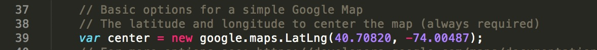Link to your logo instead of the classic marker just below.
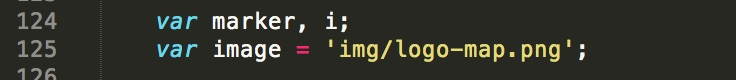I advise you to visit Snazzy Map to customize your map ;-)
This is a jQuery component that let you play a Youtube® movie as background of your HTML page.
Add easily your video with just your link in the HTML code, see the screenshot below.
For more options, please visit this page.
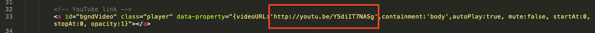
The player doesn’t work as background for mobile devices due to the restriction policy adopted by all on managing multimedia files via javascript.
To solve this, instead of to have only the color of your body, I added a fullscreen slideshow with the pictures of your choice.
Set up this one in js/jquery.mb.YTPlayer.js, see the screenshot below.
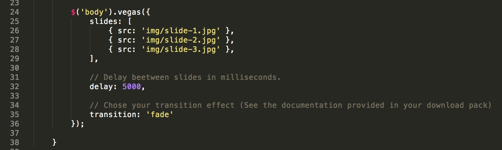
Photoswipe is a JavaScript image gallery for mobile and desktop.
Check out the official documentation here.
Main settings, see the screenshot below.

Don't forget to add the class "clear-second" on each first figure of 2, see the screenshot below.
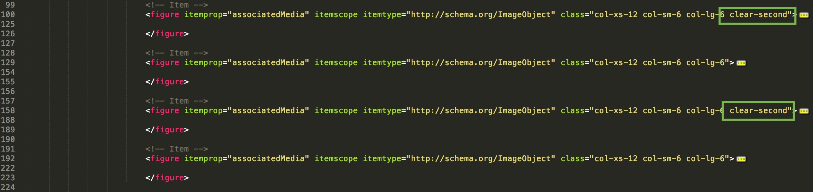
1st solution : Mailchimp
Newsletter service
More than 6 million people use MailChimp to create, send, and track email newsletters. Whether you're self-employed, you manage projects for clients, or you work for a Fortune 500 company, MailChimp has features and integrations that will suit your email marketing needs. More informations
For the configuration with Mailchimp, you must just to know your API Key and the ID of your list.
Be sure that the form created in your mailchimp dashboard is asking only the email address and not the name, surname or something else.
Get your API Key :
Step 1 - Click your profile name to open the Account Panel and choose Account.
Step 2 - Click the Extras drop-down menu and choose API keys.
Step 3 - Copy an existing API key or click the Create A Key button.

Step 4 - Be careful that your list asks just the email address, Lists > Signup forms > General forms > Build it. See the screenshot below.

Get your List ID :
Step 1 - Navigate to the Lists page on the top left of your dashboard.
Step 2 - Click the list's drop down menu and select Settings.
Step 3 - Click on List name & defaults to find the unique List ID for the list, see the screenshot below.

Final step
Open the file "notify-me.php" findable in the folder php/notify-me.php and fill up the API_KEY and LIST_ID fields.
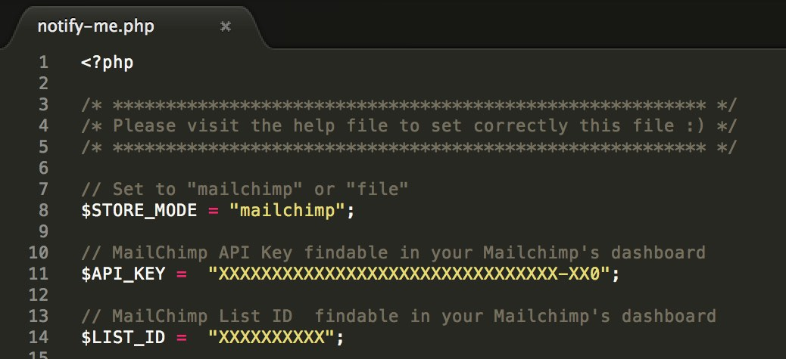
2nd solution : File
Save the emails in a .txt file
Second solution, the save of the subscribers's emails in a txt file at the root of your server
Set up the file storage :
Step 1 - Create a .txt file empty or use the file subscription-list.txt provided in your download pack.
Step 2 - Upload the file at the root of your server
Step 3 - Open the file "notify-me.php" findable in php/notify-me.php
Step 4 - You have to fill up the fields as on the screenshot below:

3rd solution : Email
Receive in your mail box
Third solution, you can receive directly in your mail box, the subscribers's emails
Set up the email sending :
Step 1 - Open notify-me-2.php findable in php/notify-me-2.php
Step 2 - Rewrite your email and don't forget to change the path in your html, see the screenshots below

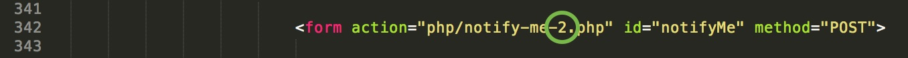
Set your email in the contact-me.php file.
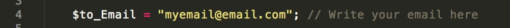
Edit some properties of the contact form in the same file, contact-me.php, see the screenshot below.

Documentation
Just below the nav on your left, you will find 4 useful links to learn or improve your knowledges in SASS, Bootstrap, Bourbon & IonIcons